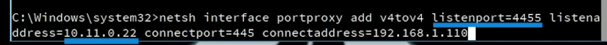
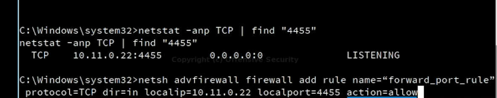
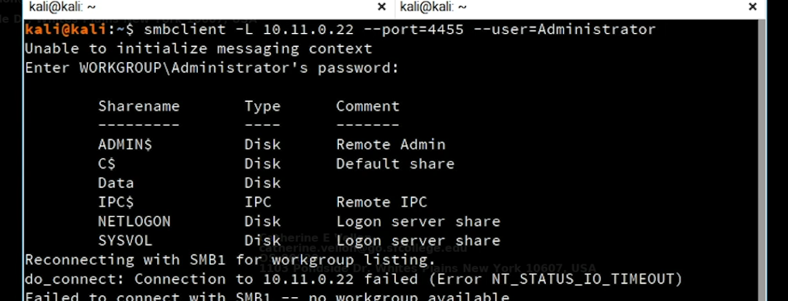

04-netsh
Intro
installed by default for lport
need ip helper service running and ipv6 support enabled (by default enabled)


like dynamic port forwarding
access internal srvice from kali attacker
set smab to min_protocl=smb2
